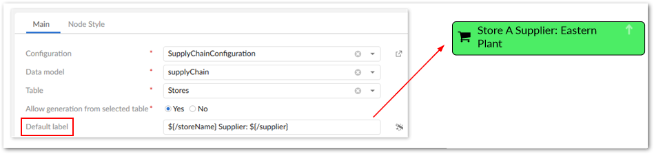
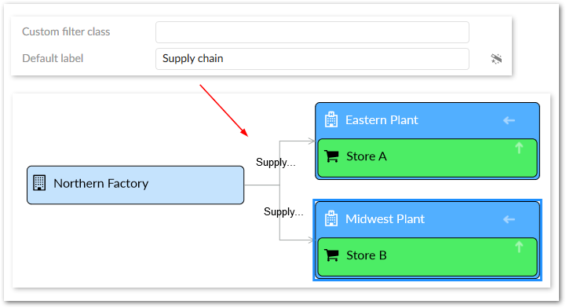

The add-on gives you full control over the labels that display on data value graph nodes and relationships. Administrators can configure the following label types for nodes and links:
Default: You can enter text to use for the default labels. Alternatively, you can select the wizard icon to choose from related data model elements. Labels based on model elements dynamically update based on changes to the associated value.
Localized: This type of label leverages EBX®'s data model localization feature. As with the default label you can enter text, or specify dynamically updated model elements.
Programmatic: You can point to a Java class that defines how labels display.
You can use a combination of a fixed label and XPath for default and localized labels. However, programmatic labels override the other label types. So when you define a programmatic label, it is the only label that displays. If you choose not to specify a label, each graph element's default label displays.
When nodes are filtered out or hidden due to permissions, the hidden node labels do not display. For instance, a label configuration may specify that nodes from table A display their own label and the label linked from table B. However, if table B is hidden, only table A's label displays.
A maximum of three lines display on node labels. Once the maximum is reached, ... displays and the full label can be viewed by hovering your mouse over the label.
Administrators can configure label settings in the following locations:
Node labels: Administration > User interface > TIBCO EBX® Data Model and Data Visualization Add-on > Value and relationship graphs > Table configuration. The following image shows an example of combining model elements and text so that the label shows which assembly plant supplies a particular store:

Link labels: Administration > User interface > TIBCO EBX® Data Model and Data Visualization Add-on > Value and relationship graphs > Link configuration. The following example shows a link label defined with plain text that is too long to display. You can hover your mouse over the link to display the full label. By right-clicking the link and selecting Show link details you can view the full label along with other details.

When there are multiple links between a source and target, no label displays. However, users can right-click and open the link details to view all labels.